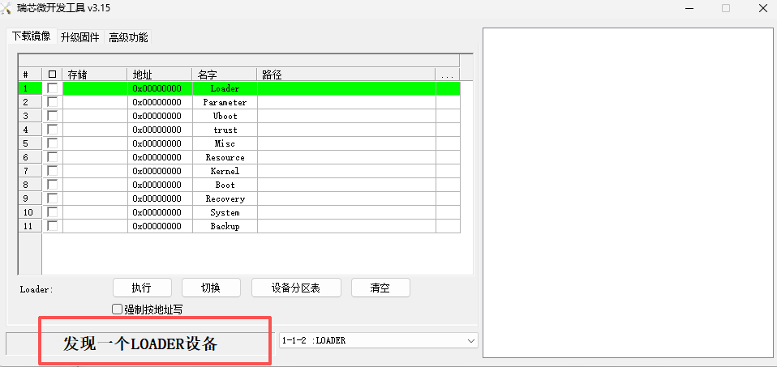
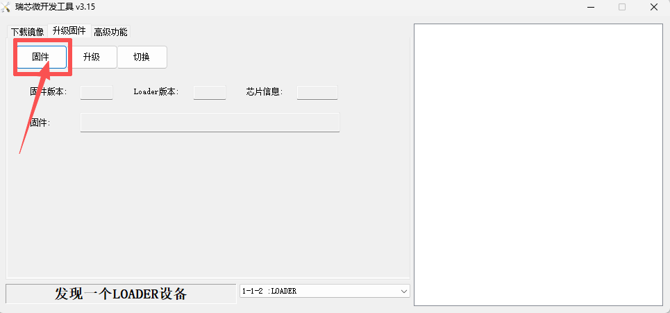
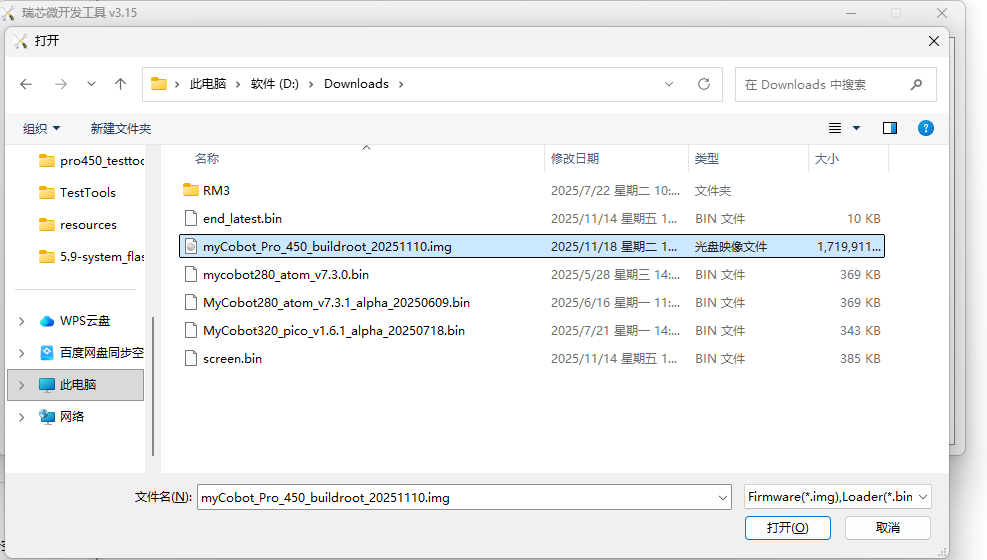
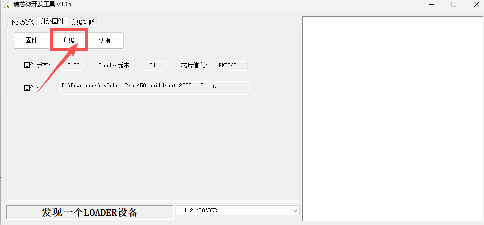

Pro450系统镜像烧录说明
注意： 系统镜像烧录完成之后，机械臂各关节需要重新校准零位才能正常使用。
本章节将指导您如何在 PC 端 使用烧录工具，将系统镜像正确烧录至 Pro450 主控设备。请严格按照步骤进行，确保烧录过程安全、顺利。
1 准备工作
在开始烧录之前，请确保以下硬件与软件准备齐全：
硬件需求
| 设备 | 数量 | 用途说明 |
|---|---|---|
| Windows PC | 1台 | 运行烧录工具和驱动安装 |
| 双头 USB 数据线 | 1条 | 连接 PC 与 Pro450 |
| Pro450 机器人 | 1台 | 待烧录设备 |
| 稳定电源 | 1套 | 为 Pro450 供电（保持通电） |
| 急停开关 | 1个 | 安全保护 |
| 网线 | 1条 | 连接机械臂与 PC |
软件需求
官方提供的 系统镜像文件
烧录工具（例如：RKDevTool_Release_v3.15，以实际为准）
对应的 USB 驱动程序（设备通常为 USB 转串口 Driver）
🔔 提示： 建议将所有工具放在同一个文件夹中，避免路径中出现中文或空格。
网络配置
- MyCobot Pro 450 默认 IP 地址：
192.168.0.232 - 默认端口号：
4500 - 注意：PC 端需要将本机网卡 IP 设置为 同一网段（例如
192.168.0.xxx，xxx为 2~254 之间的任意数，且不能与机械臂冲突）。 示例：
- 机械臂 IP：
192.168.0.232 - PC IP：
192.168.0.100 - 子网掩码：
255.255.255.0
- 机械臂 IP：
验证：完成网络配置后，可在 PC 终端执行以下命令，若能成功返回数据包，则说明网络连接正常：
ping 192.168.0.232
2 系统镜像下载
点击下载镜像：myCobot_Pro_450_buildroot_20251110.img
3 安装 USB 驱动程序
点击下载驱动：DriverAssitant_v5.12.zip
驱动下载之后，解压并打开提供的
DriverAssitant_v5.12文件夹双击运行
DriverInstall.exe进行安装即可
4 安装烧录工具
点击下载烧录工具：RKDevTool_Release_v3.15.zip
驱动下载之后，解压并打开提供的
RKDevTool_Release_v3.15/RKDevTool_v3.15_for_window文件夹双击运行
RKDevTool.exe打开即可
5 连接 Pro450 设备
- 使用 双头 USB 数据线 将设备与 PC 相连

- 双头USB线一端连接电脑，另一端连接Pro450机器底座的
USB1接口（上面的USB口）

确保 Pro450 已通电并使用网线与电脑连接
PC电脑远程ssh登录Pro450系统执行烧录命令
6 SSH远程连接登录
使用Win + R快捷键打开cmd面板，输入以下命令：
ssh-keygen -R 192.168.0.232
ssh root@192.168.0.232
按照提示输入yes, 然后再输入登陆密码root即可

7 启动系统烧录功能
SSH远程连接登录之后，输入下面命令启动系统烧录功能：
reboot loader

8 启动烧录工具
在步骤7启动系统烧录功能之后，打开烧录工具将会看到如下图：

点击
升级固件按钮
点击
固件按钮，打开文件资源管理器，选择烧录的系统镜像文件，然后点击打开。

选择镜像文件之后，点击
升级按钮。
系统镜像烧录完成之后，烧录工具右侧将有提示信息：

9 验证系统镜像烧录
烧录系统镜像之后，重新使用SSH远程连接机械臂系统，输入下面命令查看系统版本号：
cat /etc/version

系统镜像文件名称与系统版本号关联，若输出的版本号与镜像文件的日期名称一致，代表系统镜像烧录成功。
注意： 系统镜像烧录完成之后，机械臂各关节需要重新校准零位才能正常使用。